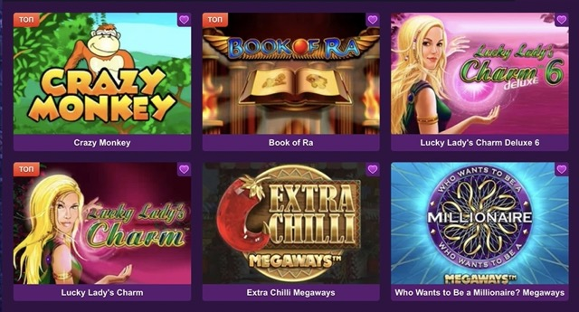

Клубника казино — официальный сайт и игра онлайн
На этой странице собран обзор бренда Klubnika casino, casino klubnika, клубника казино и clubnika casino: как пользоваться официальными разделами, где смотреть бонусы и как перейти к игре онлайн без лишней путаницы в запросах вроде online klubnika casino или clubnikacasino.
Если вы ищете цельный вход в тему — от знакомства с интерфейсом до быстрого старта в казино-разделе, ниже есть структура, карточки преимуществ и ссылки на узкие страницы по отдельным интентам: официальный сайт, зеркало, вход, регистрация, скачивание и отзывы.

Бренд казино клубника чаще всего ищут под разными написаниями: латиница и кириллица, порядок слов «casino clubnika» или «clubnika казино», а также комбинации вроде kazino clubnika. Для пользователя важно не имя в поиске, а понятная схема: где официальная витрина проекта, где вход в личный кабинет, где описаны бонусы и как открыть рабочую ссылку, если основной адрес временно недоступен.
Что это
Клубника казино в маркетинговом и навигационном смысле — это связка онлайн-сервисов вокруг игрового бренда: страница знакомства, разделы с акциями, инструменты доступа и мобильные сценарии. Запросы klubnika casino сайт и clubnika casino сайт обычно означают одно: пользователь хочет убедиться, что попал на актуальную версию интерфейса и видит привычную структуру меню.
Главная задача обзорной страницы — не смешивать узкие темы. Зеркало не должно «забирать» блок про промокоды, а бонусы — не подменять собой инструкцию по входу. Поэтому здесь только карта разделов и мягкая перелинковка: подробности вынесены на отдельные URL, чтобы поведенческие факторы и SEO-кластеры оставались чистыми.
Официальный сайт
Назначение домашней витрины, разделы и логика переходов к регистрации и входу.
Бонусы и акции
Приветственные предложения, промокоды и правила активации после перехода.
Зеркало доступа
Как сохранить стабильный доступ, если основной адрес перегружен или недоступен.
Скачать и мобильная версия
Приложение, APK и сценарии игры со смартфона без потери функций.
Как пользоваться
Рекомендуемый маршрут для нового пользователя выглядит так: сначала короткий обзор на главной, затем страница официального сайта — чтобы понять, какие блоки считаются базовыми. После этого вы выбираете сценарий: нужен быстрый старт в игре — идёте в казино; важна выгода по акциям — открываете бонусы; планируете стабильный доступ — сохраняете в закладки материалы про зеркало.
Если вы уже играете и хотите продолжить с телефона, логично заранее изучить мобильную версию и установку. А перед принятием решения о бренде полезно прочитать отзывы и обзор: там собраны нюансы интерфейса и типовые пользовательские ожидания.
- Не смешивайте задачи: зеркало — про доступ, бонусы — про акции.
- Проверяйте, что CTA ведёт на ожидаемый офферный переход.
- Держите отдельно «вход» и «регистрация»: это разные процедуры.
Преимущества
Структура под clubnika casino и klubnika casino выигрывает там, где пользователю не нужно гадать: контент центрирован, навигация повторяется в шапке и подвале, а визуальный якорь — баннер и логотип — помогает быстро узнать бренд. Тёмная палитра с ягодными акцентами снижает визуальный шум и делает акценты на кнопках заметнее.
Отдельный плюс — разнесение интентов по страницам: поисковая машина лучше понимает релевантность, а человеку проще найти ответ без «простыни» из несвязанных блоков. Для коммерческого SEO это означает более предсказимые заголовки H1/H2 и меньше риска размыть релевантность.
Как начать
- Определите цель: бонус, игра, вход или установка приложения.
- Откройте соответствующий раздел в меню и прочитайте краткую инструкцию на странице.
- Нажмите основную кнопку призыва к действию — она ведёт на единый офферный переход.
- Закрепите в закладках страницу про зеркало, если доступ для вас критичен.
Дополнительная информация
Запросы вроде online klubnika casino часто сопровождаются желанием сразу перейти к игре. На этой главной мы намеренно держим баланс: есть общий контекст бренда и ссылки на узкие страницы, чтобы не превращать главную в «всё обо всём». Так выглядит зрелая перелинковка: главная усиливает бренд, а дочерние URL закрывают конкретные кластеры.
Если вы повторяете бренд в разных языковых формах (clubnika казино, casino clubnika), ориентируйтесь на смысл, а не на буквальное совпадение слов в тексте. Важнее ясные подзаголовки, списки и ответы в FAQ — они лучше работают на удержание внимания и на сниппеты.
Для пользователей, которые привыкли к короткому запросу clubnikacasino, полезно иметь на главной явный блок «куда кликнуть дальше»: официальный сайт, вход, регистрация, казино, бонусы, зеркало, скачать, отзывы — всё это доступно из шапки без дополнительного поиска по странице.
Практический смысл обзорной страницы для бренда klubnika casino в том, что она собирает разрозненные формулировки в единый сценарий чтения. Кто-то приходит по запросу casino klubnika, кто-то — по русскому «казино клубника», и оба ожидают одинаковой ясности: где бонусы, где вход, где описание слотов. Когда структура повторяема от страницы к странице, снижается когнитивная нагрузка: не нужно заново искать меню или понимать новую сетку.
Ещё один нюанс касается доверия к интерфейсу. Пользователь сравнивает визуальную цельность: логотип, баннер, аккуратные карточки и предсказуемые отступы. Это не «украшательство», а часть UX: в темной теме важно сохранить контраст текста и не превращать абзацы в серую кашу. Поэтому основной текст держится в читаемой ширине, а акцентные элементы подсвечиваются ягодными оттенками умеренно.
Наконец, стоит отдельно сказать про коммерческую составляющую. Информационно-коммерческий текст работает тогда, когда обещание совпадает с действием: если блок рассказывает про бонусы, рядом должна быть понятная кнопка, ведущая к офферу. Если блок про зеркало — ссылка ведёт на страницу зеркала, а не смешивает акции и альтернативные адреса в одном абзаце. Такой дисциплинированный подход снижает раздражение и улучшает поведенческие метрики.
Если вы планируете возвращаться к игре регулярно, полезно заранее определить «свой» набор закладок: главная как точка входа, страница официального сайта как справочник по разделам, отдельная страница для зеркала и отдельная — для мобильной установки. Тогда даже при смене устройства вы не теряете маршрут и не смешиваете задачи в одном длинном полотне текста.
FAQ
Чем главная отличается от страницы официального сайта?
Главная даёт обзор бренда и карту разделов. Страница официального сайта подробно объясняет назначение витрины, доступ и логику разделов без смешения тем бонусов и зеркала.
Почему бонусы вынесены отдельно?
Бонусы и промокоды — отдельный коммерческий интент. Отдельная страница помогает и пользователю, и поисковой системе: проще найти ответ про акции, не читая про зеркало.
Где узнать про вход и регистрацию?
Используйте страницы «Вход» и «Регистрация»: там пошагово расписаны действия, типовые ошибки и восстановление доступа.
Что делать, если не открывается основной адрес?
Откройте материалы про рабочее зеркало: там описано, как пользоваться альтернативной ссылкой и как не потерять доступ к аккаунту.
Как перейти к игре в автоматы?
Раздел «Казино» описывает онлайн-сценарий и слоты. Основная кнопка на той странице ведёт к быстрому старту игры.